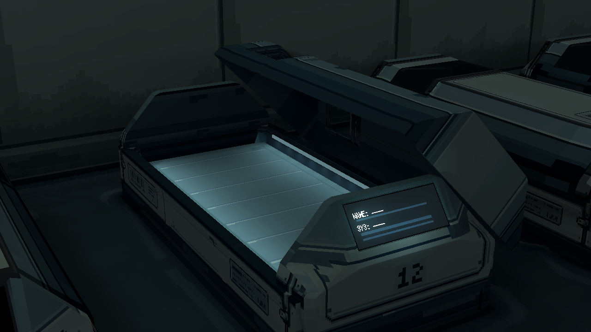
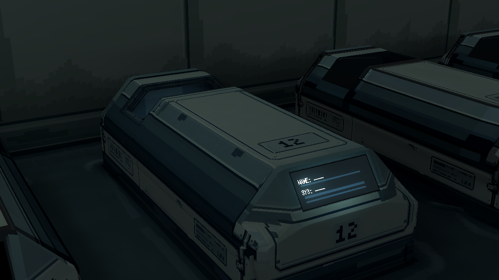
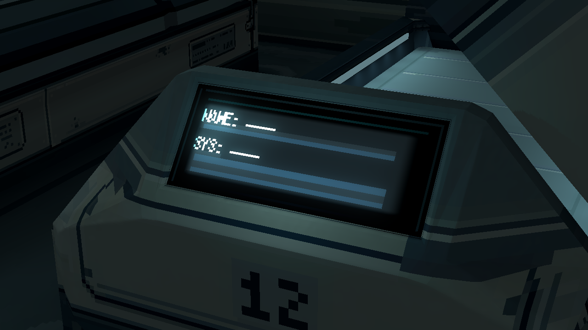
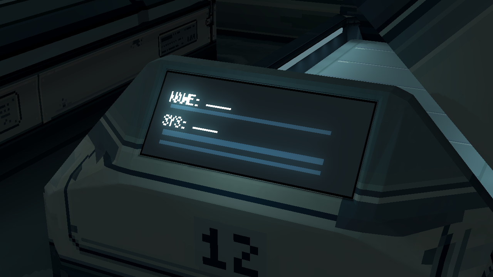

<!doctype html><html lang="zh-CN"><meta charset="utf-8"><title>休眠舱屏幕 v8.1</title><style>body{margin:0;background:#151e23;color:#dbe6e8;font:16px/1.6 system-ui}main{max-width:1600px;margin:auto;padding:24px}section{display:grid;grid-template-columns:1fr 1fr;gap:16px}figure{margin:0;border:1px solid #43555d}img{display:block;width:100%;image-rendering:pixelated}figcaption{padding:8px}a{color:#b2dce6}@media(max-width:800px){section{grid-template-columns:1fr}}</style><main><h1>休眠舱屏幕 v8.1</h1><p>去除原像素贴图的厚黑描边，蓝灰显示面铺满原面板。舱体、灯光和开合保持。</p><p><a href="README.md">说明</a> · <a href="source/capture_quality.json">截图核验</a></p><h2>开盖</h2><section><figure><figcaption>旧 v8：厚黑框／中央背光</figcaption></figure><figure><figcaption>新 v8.1：显示面铺满，仅留窄收边</figcaption></figure></section><h2>闭合</h2><section><figure><figcaption>旧 v8：厚黑框／中央背光</figcaption></figure><figure><figcaption>新 v8.1：显示面铺满，仅留窄收边</figcaption></figure></section><h2>屏幕近景</h2><section><figure><figcaption>旧 v8：厚黑框／中央背光</figcaption></figure><figure><figcaption>新 v8.1：显示面铺满，仅留窄收边</figcaption></figure></section></main></html>